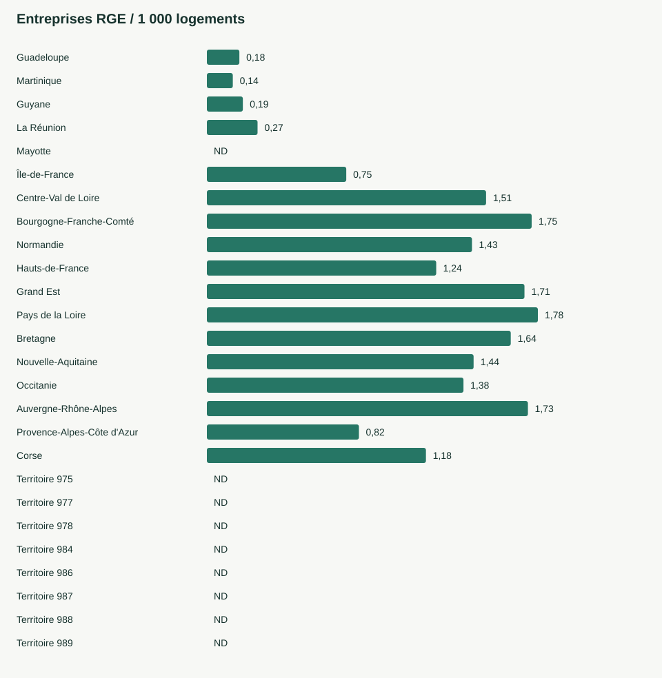

Legibat · Observatoire de la couverture RGE · 2026
Cartographie 2026 de la couverture d'artisans RGE par commune vs nombre de logements
Rapprocher les professionnels de travaux RGE et les logements pour explorer les écarts de présence locale. Observation au 2026-10-24.
Les classes décrivent une présence locale. Elles ne mesurent ni la disponibilité des entreprises ni les délais de chantier.
La couverture par région ou territoire
| Région | Communes | Entreprises | Établissements | Ratio logements |
|---|---|---|---|---|
| Guadeloupe | 32 | 42 | 42 | 0,175 |
| Martinique | 34 | 31 | 31 | 0,140 |
| Guyane | 22 | 20 | 20 | 0,194 |
| La Réunion | 24 | 111 | 112 | 0,273 |
| Mayotte | 17 | 3 | 3 | ND |
| Île-de-France | 1 266 | 4 614 | 4 657 | 0,751 |
| Centre-Val de Loire | 1 754 | 2 152 | 2 178 | 1,505 |
| Bourgogne-Franche-Comté | 3 685 | 2 825 | 2 850 | 1,751 |
| Normandie | 2 644 | 2 691 | 2 733 | 1,429 |
| Hauts-de-France | 3 782 | 3 678 | 3 726 | 1,236 |
| Grand Est | 5 115 | 5 059 | 5 108 | 1,712 |
| Pays de la Loire | 1 228 | 3 821 | 3 868 | 1,784 |
| Bretagne | 1 202 | 3 328 | 3 378 | 1,638 |
| Nouvelle-Aquitaine | 4 293 | 5 321 | 5 399 | 1,438 |
| Occitanie | 4 446 | 5 254 | 5 308 | 1,383 |
| Auvergne-Rhône-Alpes | 4 025 | 8 167 | 8 232 | 1,731 |
| Provence-Alpes-Côte d'Azur | 946 | 2 664 | 2 691 | 0,820 |
| Corse | 360 | 319 | 319 | 1,181 |
| Territoire 975 | 2 | 0 | 0 | ND |
| Territoire 977 | 1 | 0 | 0 | ND |
| Territoire 978 | 1 | 1 | 1 | ND |
| Territoire 984 | 5 | 0 | 0 | ND |
| Territoire 986 | 3 | 0 | 0 | ND |
| Territoire 987 | 48 | 0 | 0 | ND |
| Territoire 988 | 33 | 0 | 0 | ND |
| Territoire 989 | 1 | 0 | 0 | ND |

Comment lire l'indice
Les entreprises sont dédupliquées par SIREN, les établissements par SIRET. Les qualifications doivent être valides à la date d'observation. Les activités d'étude, d'audit et d'architecture sont exclues. Un code postal partagé n'est jamais affecté à plusieurs communes sans désambiguïsation.
Logements INSEE 2023, géographie 2026. Les valeurs manquantes restent absentes. Le ratio vaut 1 000 × entreprises / logements. Les classes sont : zéro entreprise, « Désert RGE » ; ratio positif sous 2, « Sous-capacité » ; de 2 inclus à 5 exclu, « Équilibré » ; à partir de 5, « Forte couverture ». Sans logements positifs connus : « Non calculable ».
Ces seuils éditoriaux ne sont pas une norme publique. Une entreprise peut intervenir hors de sa commune et posséder plusieurs implantations. Les effectifs, carnets de commandes, déplacements et besoins de rénovation ne sont pas connus. Les agrégats recomptent les entreprises distinctes ; ils ne sont pas une somme des compteurs communaux.
Un statut RGE ne démontre ni l'existence d'une assurance décennale valable pour le chantier, ni la conformité Consuel, ni l'absence de fraude. Aucun délai d'intervention n'est calculé. Les URL locales suivent une convention de routage et ne prouvent pas l'existence de toutes les pages.
Sources et qualité
ADEME : entreprises RGE · API Geo : communes et population · INSEE : comparateur de territoires. Sources collectées et transformées par Legibat, producteur privé indépendant.
1 584 lignes éligibles n'ont pas pu être rattachées. 111 communes ont un dénominateur logement manquant. Les contrôles détaillés et les empreintes de fichiers sont fournis avec les données. Aucun score de qualité, délai d'indexation ou référencement par un portail tiers n'est garanti.
Télécharger et réutiliser
- cartographie-2026-couverture-artisans-rge-communes.csv
- cartographie-2026-couverture-artisans-rge-communes-comma.csv
- cartographie-2026-couverture-artisans-rge-communes.parquet
- synthese-departementale-rge-2026.json
- synthese-regionale-rge-2026.json
Aperçu officiel
Dictionnaire des variables
| Variable | Définition |
|---|---|
code_insee | Code commune INSEE, conservant les zéros initiaux et la Corse. |
nom_commune | Nom officiel de commune au jour de collecte API Geo. |
code_departement | Code du département ; DOM sur trois caractères. |
code_region | Code de région INSEE. |
nom_region | Nom de la région dans l'API Geo. |
population | Population fournie par l'API Geo ; millésime non exposé, null si absent. |
nb_logements | Parc INSEE tous logements ; proxy population/taille_ménage si estimation explicite. Null si manquant. |
source_logements | INSEE, estimation_population, manquant ou fictif. |
millesime_logements | Année de référence du recensement INSEE, différente de l'année RGE. |
nb_entreprises_rge | SIREN distincts disposant d'au moins un établissement de travaux RGE actif dans la commune. |
nb_etablissements_rge | SIRET distincts de travaux RGE dont les dates englobent la date d'observation. |
nb_qualif_pv | Nombre de couples établissement-organisme-code-domaine distincts dans la famille pv. Familles non exclusives. |
nb_qualif_pac | Nombre de couples établissement-organisme-code-domaine distincts dans la famille pac. Familles non exclusives. |
nb_qualif_isolation | Nombre de couples établissement-organisme-code-domaine distincts dans la famille isolation. Familles non exclusives. |
nb_qualif_chauffage | Nombre de couples établissement-organisme-code-domaine distincts dans la famille chauffage. Familles non exclusives. |
nb_qualif_menuiserie | Nombre de couples établissement-organisme-code-domaine distincts dans la famille menuiserie. Familles non exclusives. |
ratio_artisans_1000_hab | 1000 * entreprises RGE / population ; null si dénominateur nul ou absent. |
ratio_artisans_1000_logements | 1000 * entreprises RGE / logements ; null si dénominateur nul ou absent. |
indice_tension_rge | Classe descriptive selon le ratio logements non arrondi. Seuils configurés dans provenance.json ; non officiel. |
url_verification_locale | URL Legibat construite ; existence et disponibilité de cette page non attestées. |
date_observation | Date de contrôle de validité des qualifications (bornes inclusives). |
donnees_partielles | Vrai pour démonstration ou collecte limitée, dont la publication est interdite. |